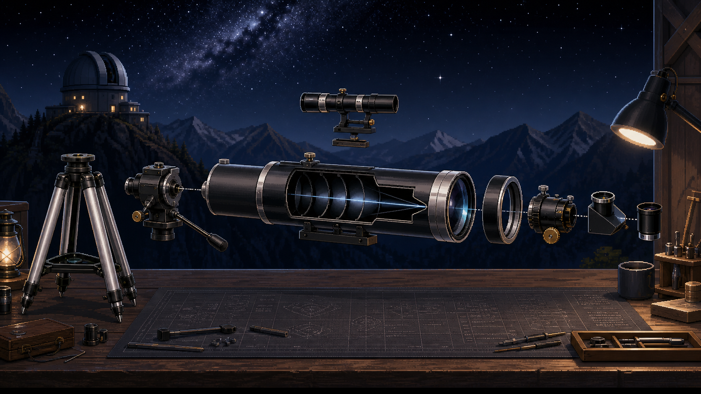

REFRACTOR / 180×
A pixel-realistic astronomy observation game
STARLIGHT
OBSERVATORY
星光天文台
Build your telescope. Read the sky. Discover more.
亲手组装望远镜，读懂夜空，发现更远的世界。
MOUNT LYRA / 02:16 / CLEAR SKY
Scroll to observe01 / FIRST LIGHT
Every observation begins
with your own eyes.
每一次观测，都从自己的双眼开始。
Before the glass, before the mirror, before the first assembled instrument, there is a sky wide enough to take in at once.
Learn how vision adapts to darkness, why brightness matters, and why a wide field still leaves faint worlds unresolved.
120°wide field0×magnification∞questions
02 / ASSEMBLY BAY
A telescope is not a single object.
It is a system.
望远镜不是一个单独的物体，而是一套需要精确对齐的光学系统。

Enter the tube blueprint. Install each internal part. See how one imperfect alignment changes the whole image.
03 / THE PATH OF LIGHT
Focus is not a button.
It is where light meets.
调焦不是简单的按钮操作，而是让光线在焦平面重新汇聚。
Move the focal plane, then feel the image settle. Magnification, field of view, and clarity become a relationship you can see instead of a number you simply select.
✦
Distant light
Objective
Focal plane
FOCAL LENGTH 900 mmFIELD OF VIEW 1.2°CLARITY 92%
04 / WHEN GLASS HAS LIMITS
When the limits of glass become visible,
a new path begins.
当玻璃镜片的极限显现，另一条道路随之开启。
REFLECTOR / 180×
Reflection keeps the detail.
Primary mirror / secondary / collimationNow the Newtonian arrives: a primary mirror gathers the light, a spider holds the secondary, and a side focuser makes alignment visible. It trades color fringing for a system you must collimate and maintain.
05 / THE OBSERVATION LOOP
Find it. Center it.
Focus it. Understand it.
找到目标，对准目标，调清目标，理解目标。
AZ 142°ALT 38°TRACK / MANUAL
06 / CONDITIONS ARE PART OF THE INSTRUMENT
The sky never
stays still.
夜空从来不会静止。
Earth rotation pulls a target through the field. Clouds close a window. Turbulence softens fine detail. Read the conditions, adjust the power, correct the focus, and keep tracking.
M 42
SEEING / IICLOUD / 17%DRIFT / 15″ SEC
07 / OBSERVER'S PATH
One night sky.
Many ways to see it.
Naked Eye
Find the sky's first landmarks.
Refractor
Learn how glass brings light together.
Newtonian Reflector
Collimate a mirror-built optical path.
Dobsonian
Gather more light. Track by hand.
Cassegrain
Fold a long focal length into a compact tube.
Gregorian
Refine a precise two-mirror alignment.
Infrared Space Telescope
Reveal heat beyond visible light.
FAST Radio Telescope
Listen for a pulse in the cosmic noise.
Scroll sideways through an instrument family. Each one solves a different problem.
08 / THE ASTRONOMY CLUB
You are not just collecting stars.
You are learning how we see them.
你收集的不只是星星，而是在学习人类如何看见它们。
09 / A GAME ABOUT LOOKING CLOSER
Built for wonder.
Grounded in observation.
Assemble real telescope systems 组装真实望远镜系统
Learn optics through play 在游戏中学习光学原理
Observe planets, nebulae and galaxies 观测行星、星云和星系
Adjust focus, tracking and alignment 调整焦距、追踪和准直
Experience clouds, seeing and Earth rotation 感受云层、视宁度和地球自转
Progress from naked-eye to radio astronomy 从肉眼观测走向射电天文学